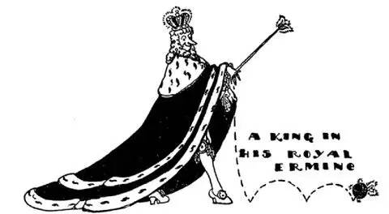

58
Where the Thermometer Freezes Up
温度计冻住的地方

MOST thermometers have numbers down to forty degrees (40°) below zero. There the numbers stop, for when the mercury gets down to that point it freezes up . But there are few places in the World where it ever gets as cold as that. The coldest place in the World is not at the North Pole; the coldest place in the World, where the thermometer does go below 40° and freezes up, is in the country called Siberia.
Siberia is a huge country north of China. In the north of Siberia the sun never rises all winter long. It is night, as it is in Norway and Sweden. But there is no Gulf Stream to warm the land, so it gets much colder than 40° below zero, and they have to use a different kind of thermometer to measure how cold it is. In one place it goes to 90° below zero, which is the coldest place i. t. w. W. People can’t grow fur on their skins to keep themselves warm as animals can, so when they go outside they must cover themselves from top to toe with animal skins or they would freeze to death in a few moments.
But all of Siberia is not like this. There is a top, a middle, and a bottom part. Few people live in the northern part, however. It is so cold that no trees grow there and the ground is frozen solid many feet down. In the summer it gets very warm, and the thermometer sometimes goes just as high above zero as it goes below in the winter; that is, to 90°. The ground then thaws out on top and moss and a few other things grow for a short while, though the ground underneath still stays frozen. Siberia is larger than the United States. It belongs to Russia, but there are people from other countries living there too.
The middle part of Siberia is not nearly so cold, and there great forests have grown, and in the forests live wild animals such as foxes, wolves, sable, and ermine, which have beautiful thick coats of fur to keep themselves warm. Trappers hunt these animals just for their furs, to be made into coats to keep people warm. One small animal, called the ermine, has a snow-white coat and a tail with a black tip. The ermine hates dirt or anything that will soil his white fur, so he keeps himself spotless. It is for this reason that the official robes of judges and kings are made of the fur of the ermine, as a sign that they too must be pure and clean in heart and mind. The skins of many such animals are sewn together to make a single cape or coat, which then looks white with little black tails spotted regularly over it.

穿着白鼬皮毛皇袍的国王
The little animal called the “ermine” is different from most boys—he hates dirt
名叫“白鼬”的小动物和大多数男孩不一样——它讨厌脏东西
The longest railway in the World is built through the bottom part of Siberia. It is so long it takes two weeks to go from one end of it to the other. One end of it on the Pacific Ocean is called Vladivostok and the other end in Russia is Moscow. It is called the Trans-Siberian Railway, which means the Across Siberia Railway.
Most of the people in Siberia live along this railway, and yet one may travel for hundreds of miles without seeing a town or even a house. Often the towns are far from the railroad, so that there is a long drive from the station to the town. The engines that draw the trains are fired by wood instead of coal, and along the railroad there are piles of wood at which the train stops to get fuel, as a car would stop to get gasoline. The chief Siberian cities end in “sk.” They are Omsk, Tomsk, and Irkutsk.
A stranger once asked a man on the street how far it was to the railway station. The man replied, “If you keep on going the way you are headed it is twenty-five thousand miles, but if you turn round it’s two blocks.”
How far do you suppose it is to Siberia from our country?—how many miles away would you say?—eight thousand?—ten thousand miles? As a matter of fact, it is only about fifty miles—yes, that’s right, fifty miles—for the short way is across to Alaska. Between Siberia and Alaska is a narrow strip of water called Bering Strait, and when this is frozen over, one could walk across from Asia to America. On the map there is also a long string of islands that look like stepping-stones, but one would have to be a giant to walk across that way. Some say that the Indians and Eskimos in Alaska and the United States may have come across Bering Strait from Asia long, long ago, and that they look something like the Chinese because they once came from that country.
Before World War I, when Russia had a czar, people who hated the czar or were supposed to hate the czar, or who had said anything against the czar, or even thought anything against the czar, were made prisoners, torn away from their families and friends, and sent to far-off Siberia to work in the mines. Many of them perished before reaching there. Most of them never returned.
After World War I, there was a revolution. The people rose up and threw out the Czar’s government. The new government was taken over by a group of Russians called Communists. These Communists killed the czar and his family and most of the well-to-do people of Russia. The Communists made many changes. They started schools. They killed all farmers who owned large farms and gave their land to many poor people to farm. They started factories and opened stores and built railroads and airlines. They made large dams across the rivers so they could use waterpower to send electric current to the factories.
【中文阅读】
大部分温度计向下标出的度数最低是零下40度，在零下40度这儿数字就停止了，因为温度计里的水银降到这个温度就会冻住。但世界上很少有地方能冷成那样。世界上最冷的地方不在北极。世界上最冷的地方，是在一个叫“西伯利亚”的地方，那里温度计能降到零下40度以下并冻住。
西伯利亚是在中国以北的一个巨大区域，在西伯利亚的北部，整个冬季，太阳都不会升起。就像在挪威和瑞典一样，都是夜晚。但那儿没有墨西哥湾流来温暖大地，因此那里的温度可以低到零下40度以下，他们要用一种特别的温度计来测量温度。有一个地方温度低到了零下华氏90度，那是世界上最冷的地方。人类不能像动物那样让自己的皮肤长出皮毛来保暖，所以，当地人外出时，只能从头到脚裹上动物的皮毛，否则一会儿就会被冻死。
但并非整个西伯利亚都像这样寒冷，西伯利亚分上中下三部分。很少有人住在北部地区，那里太冷，连树都不生长，地面以下好几英尺都冻得结结实实。夏季天气变得非常暖和，炎热时温度计升到华氏90度，与冬季最冷的度数正相反。土壤表层会解冻，苔藓和其他一些植物能短期生长。不过深层的土壤仍然冰冻着。西伯利亚的面积比美国大，属于俄罗斯，但也有其他国家的人居住在这里。
西伯利亚的中部远没有那么寒冷，那里有大片的森林，森林里有狐狸、狼、黑貂和白鼬那样的野生动物，这些野生动物都有美丽厚实的皮毛保暖。捕兽者猎杀这些动物就是为了获取它们的皮毛，用来做保暖的大衣。有一种叫“白鼬”的小动物，长着雪白的皮毛，只有尾巴尖是黑色的。白鼬爱干净，不愿让任何东西弄脏自己雪白的皮毛，所以全身总是一尘不染。由于这个原因，法官和国王的袍服都是用白鼬毛皮做的，象征他们的心灵是纯净的。将很多白鼬皮毛缝在一起就可以制成一件斗篷或大衣，整体看上去是白色上面均匀地点缀着黑色尾巴尖。
世界上最长的铁路贯穿西伯利亚的底部。乘火车从一头到另一头要花两周的时间。铁路的一头在太平洋的海参崴，另一头在俄罗斯的莫斯科，这条铁路叫做“西伯利亚大铁路”，意思是穿越整个西伯利亚的铁路。
大多数西伯利亚人都住在铁路沿线。然而，你乘火车可能走数百英里也看 不到一座城镇，甚至看不到一座房子。城镇通常离铁路较远，因此从车站到镇上驾车还有很长一段路。拉动火车的火车头不是烧煤而是烧木头。铁路沿线有一堆堆的木头，火车停下就可以添加燃料，就像小汽车停下来加油一样。西伯利亚主要城市的名字都是以“斯（茨）克”结尾的，如鄂木斯克、托木斯克和伊尔库茨克。
一个外地人曾在大街上询问到火车站有多远，得到的回答是，“如果你继续朝前走，有25,000英里，但是，如果你掉转头，也就两个街区而已。”
你猜从美国到西伯利亚有多远？——你说有多少英里？——8,000英里？10,000英里？事实上，大约只有50英里——对，没错，就是50英里——从西伯利亚到对面的阿拉斯加的最短路程。西伯利亚和阿拉斯加之间有条狭长的海域叫白令海峡，当白令海峡全部结冰时，人们就能从亚洲走到美洲。在地图上有一串看起来像踏脚石一样的岛屿，但是，如果一个人要踩着这些岛屿跨过去，还得是个巨人才行。有人说，在阿拉斯加和美国的印第安人与爱斯基摩人也许很久以前是从亚洲越过白令海峡来到美洲的，而且，他们看起来有点像中国人，因为他们曾经就是来自那个国家。
第一次世界大战之前，俄国由沙皇统治。只要有人憎恨沙皇，或被认为憎恨沙皇，或说了什么反对沙皇的话，甚至有反对沙皇的想法，就会被抓起来，强行从家人和朋友身边被带走，送到遥远的西伯利亚矿场干活，很多人在途中就死了，大部分人再也没有回来。
第一次世界大战之后俄国爆发了一场革命，人民起来反抗并推翻了沙皇政府。新政府由被称为“共产党人”的俄国人接管。共产党人处死了沙皇、沙皇家族以及大多数俄国富人。共产党人进行了很多变革，他们创建了学校，处死了拥有大片农场的地主，并将他们的土地分给贫穷的农民耕种。他们建起了工厂，开了商店，建造铁路和建立航空公司。他们在河流上建了大坝，利用水力发电，给工厂供电。